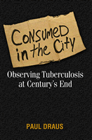

How the new tuberculosis epidemic and urban life collide
How the new tuberculosis epidemic and urban life collide


 How the new tuberculosis epidemic and urban life collide
How the new tuberculosis epidemic and urban life collide

|  |
Consumed in the CityObserving Tuberculosis at Century�s EndPaul Drauspaper EAN: 978-1-59213-249-2 (ISBN: 1-59213-249-9) |
"Consumed in the City offers a riveting and haunting view of the social havoc wreaked by TB in contemporary America. Drawing from his experience as a public health outreach worker, Paul Draus demonstrates that this preventable and treatable condition will remain a major killer if the ingrained inequalities of inner-city segregation, addiction, and poverty remain unaddressed."
—Stefan Timmermans, Associate Professor, Brandeis University, and author of Sudden Death and the Myth of CPR and The Gold Standard: The Challenge of Evidence-Based Medicine and Standardization in Health Care
As a public health field worker assigned to control tuberculosis in New York and Chicago in the 1990s, Paul Draus encountered the horrible effects of tuberculosis resurgence in urban areas, and the intersections of disease, blight, and poverty. Consumed in the City grows out of his experiences and offers a persuasive case for thinking about—and treating—tuberculosis as an inseparable component of the scourges of poverty, homelessness, AIDS, and drug abuse. It is impossible, Draus argues, to treat and eliminate tuberculosis without also treating the social ills that underlie the new epidemic.
Paul Draus begins by describing his own on-the-job training as a field worker, then places the resurgence of tuberculosis into historical and sociological perspective. He vividly describes his experiences in hospital rooms, clinics, jails, housing projects, urban streets, and other social settings where tuberculosis is often encountered and treated. Using case studies, he demonstrates how social problems affect the success or failure of actual treatment. Finally, Draus suggests how a reformed public health agenda could help institute the changes required to defeat a deadly new epidemic.
At once a personal account and a concrete plan for rethinking the role of public health, Consumed in the City marks a significant intervention in the way we think about the entangled crises of urban dislocation, poverty, and disease.
Excerpt available at www.temple.edu/tempress
"Draus's book is a humanitarian tour de force. His depiction of tuberculosis among the homeless in 1990s New York and Chicago moves seamlessly between compassionate portrayals of individuals surviving on the margins and astute indictments of municipal and public health systems that treat symptoms while leaving the major social and structural causes of tuberculosis intact. Draus's ethnographies of the lives and deaths he encountered during ten years of tuberculosis casework provide some of the best insights in recent memory into the injustices of being poor, black, and diseased in urban America. This is a must read for anyone in public health and urban policy, and for those angered by prevailing responses to deepening poverty and inner city blight in America today."
—Susan Craddock, Institute for Global Studies, University of Minnesota, and author of City of Plagues: Disease, Poverty, and Deviance in San Francisco
"Draus makes a strong case for bringing ethnography into the practice of medicine to transform patients' histories from narratives shaped by existing medical categories to representations of life as lived by patients.... This is an important book that will be valuable for health care professionals. Recommended."
—Choice
"[Draus's] experiences in the ghettos of New York City and Chicago's West Side, where he was an intimate witness to the devastating impact of TB and AIDS are powerfully recounted in Consumed In The City.... He pulls no punches, delivering a stinging critique of biomedicine, government and the media for their roles in stereotyping and stigmatizing those affected with TB.... his conclusions are legitimate and important, and doctors, social workers, and scientists concerned about national and global health inequalities would profit from reading his book."
—Journal of Clinical Investigation
"Consumed in the City provides revealing insight into the world of social epidemiology related to tuberculosis control in major metropolitan areas of the United States at the close of the 20th century. Challenging our stereotypes about 'difficult' and 'non-compliant' patients, this engrossing book reveals much about the real character and milieu of life and treatment for patients caught up in poverty, homelessness, addictions to alcohol or drugs, and discrimination."
—Journal of the American Medical Association
"Consumed in the City would be a welcome addition to those studying public health, especially urban public health education and interventions.... The reader is drawn into the world of those who suffer from TB as well as the communities, individuals, and institutions that surround them."
—Contemporary Sociology
"[a] fine example of contemporary ethnography...Draus [has] great insights into people's lives, especially inner city lives."
—Qualitative Sociology
"This excellent book is a study of tuberculosis during the 1990s in Chicago and New York. ...This readable, passionate and intelligent book explains this uncomfortable truth. It should be compulsory reading for all urban planners."
—Urban Studies
Acknowledgments
Prologue: A Day in the Life, Chicago, 1998
Introduction: TB and Sociology
1. Bugs in the Big Apple: Chasing TB in NYC
2. Slow Motion Disaster: Postindustrial Poverty and the Return of TB
3. The Public Hospital: Battles on the TB Frontier
4. Cavities of Contagion: Networks and Nodes of TB in Chicago
5. Welcome to the West Side: Hanging Out in TB Alley
6. Hard Case Histories: Narratives of Tuberculosis, Homelessness, and Addiction
7. Dif.cult Negotiations: Coercion, Care, and Compliance in TB Therapy
8. Sheep's Clothing: Lessons Learned from TB in the Field
Conclusion: Implications of a Marginal Epidemic
Epilogue: Back on the Corner, Chicago, 2002
Notes
Works Cited
Index
 | Paul Draus is a research scientist at the Center for Interventions, Treatment and Addictions Research in the Department of Community Health at the Wright State University School of Medicine. |
Health and Health Policy
Sociology
Anthropology
© 2015 Temple University. All Rights Reserved. This page: http://www.temple.edu/tempress/titles/1682_reg.html.